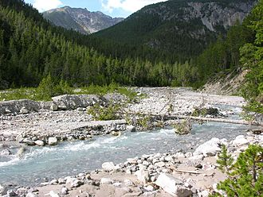

What is a protected area?
Protected areas or conservation areas are locations which receive protection because of their recognized natural, ecological or cultural values. Protected areas are those areas in which human presence or the exploitation of natural resources (e.g. firewood, non-timber forest products, water, ...) is limited.
The term "protected area" also includes marine protected areas and transboundary protected areas across multiple borders. As of 2016, there are over 161,000 protected areas representing about 17 percent of the world's land surface area (excluding Antarctica).

Yellowstone national park
The importance of protected areas
The evolution of life on this planet is an astonishing story. Just think about how living organisms emerged on Earth billions of years ago from abiotic processes, and have adapted through the forces of natural selection to become life as we know it.
All of the interactions between the complex biological structures of genetic material, species and ecosystems have formed the life support systems we are a part of today. These components of biodiversity that have shaped the history of life and made our planet habitable for that many years, are what we need to protect. The inherent resiliency of nature is essential to the survival of our own species.
The causes of the global biodiversity crisis we are facing are well known, habitat loss and degradation is the primary driver of species extinction. Therefore the conservation of nature is crucial in slowing the pace of human pressures on the environment. Protected areas are one solution to this crisis.
Protected areas are geographical spaces managed through legal or other effective means to achieve the long term conservation of nature. There are different categories of protected areas recognized by governments around the world, with varying levels of protection. The main objective of conservation is to safeguard our planet’s biodiversity, by maintaining and restoring the ecological integrity of life support systems.
